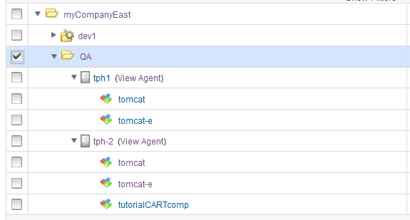

Mapping resources and components to environments
Specify where components are deployed by adding a resource or resource group to the environment. Then, map the components to those resources.
Resources and resource groups identify the agents that do the work of deploying components and provide other configuration information. You must identify the resources for the environment and then specify which components run on which resources.
If you are using IBM® WebSphere® Application Server, you can import information from cells as resources; see Importing resources from WebSphere Application Server.
- Open the environment by clicking Applications, clicking the application, and then clicking the environment.
-
Display the Add Resource to Environment window for the selected environment by clicking Add Base Resources. All previously defined resources are available for use, as shown in the following figure:

-
Select the check box that is associated with the resource or resource group to use.You can select more than one resource. Selecting a resource that was previously added to the environment has no effect.
- Click OK. The selected resource or resource group is added to the environment.
- To remove resources from the environment, in the same row as the resource, click Actions > Remove From Environment.
- Map each component in the application to the resources. Each component must be mapped to at least one resource. You can map the same component to multiple resources. Or to specify that the component is deployed more than once to the environment, you can map the component multiple times to the same resource. There are several ways to map components to resources:
- To add components one at a time, in the same row as the resource, click Actions > Add Component, and then select the component.
- To drag components, click Show > Components. Then, in the list of components that are associated with the application, drag one or more components to the resource.
- To add multiple components at once, ensure that each component has the same tag. Then, in the same row as the resource, click Actions > Add Component Tag, and specify the tag that identifies the components.
The environment is populated with resources and components.
After mapping components and resources, create an application process. For information about creating application processes, see Creating application processes.
Parent topic: Application environments